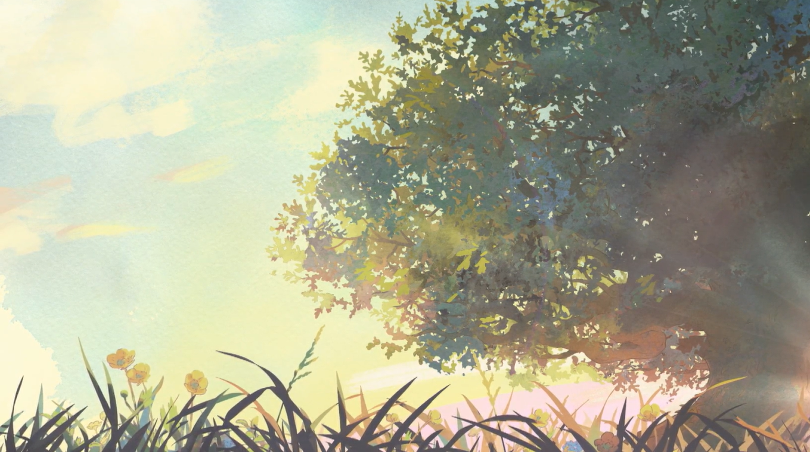

Maison de Tonmou8128
Ce site internet est construit par mes soins. J'en prends soin comme je prends soin de ma maison. Voilà pourquoi ce site s'appelle "Maison de Tonmou".
Concu avec Github Pages, ce site a deux buts: m'entrainer en matière de création de site web, et regrouper mes créations. En gros, pour le premier point, c'est le premier site web que je conçois, donc c'est logique qu'il soit imparfait; pour le deuxième point, c'est un portfolio à moitié sérieux, qui permet d'avoir une vue globale de mes compétences et projets informatiques.
Le code de ce site est disponible de manière libre sur Github: Code source
La page "Home", est la meilleure page d'accueil possible. Logique c'est ma page d'accueil ^^. Sinon mes projets et mes posts sont dessus, et en un clic, toutes les autres pages du site sont accessibles.
La page "Présentation" est une description complète de moi. Là dessus vous apprendrez que je suis beau gosse, que j'ai un QI de 138, et que je suis aussi musclé que The Rock.
Chaque quard d'heure, les couleurs de ce site changent. Plus de couleurs = plus stylé, logique ^^.
On peut retrouver une bannière sur la page d'accueil. C'est le dessin d'un arbre avec un morceau de ciel, lors du coucher de soleil. Les gens oublient souvent que les arbres ça existe, et qu'ils sont importants. Les gens oublient souvent de jeter un coup d'oeil au ciel, et de se dire qu'on a de la chance de vivre sur une planète avec un ciel d'un bleu magique, et des nuages d'un blanc éclatant. Et c'est bien dommage.
Comme dans "tonmou8128.github.io" on retrouve "tonmou", alors ce site est tout comme moi: parfait. Puis si vous avez trouvé quelque chose à critiquer, c'est que vous êtes de mauvaise foi.
Puis pensez à aller toucher de l'herbe et écouter les oiseaux, au lieu de lire ces lignes.
